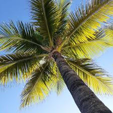
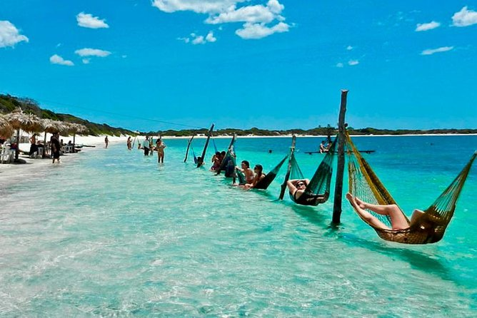
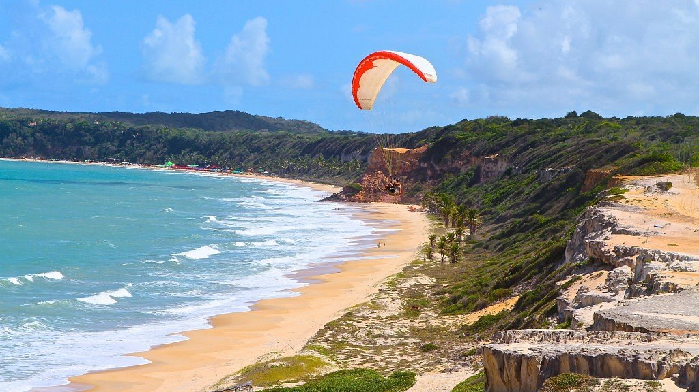
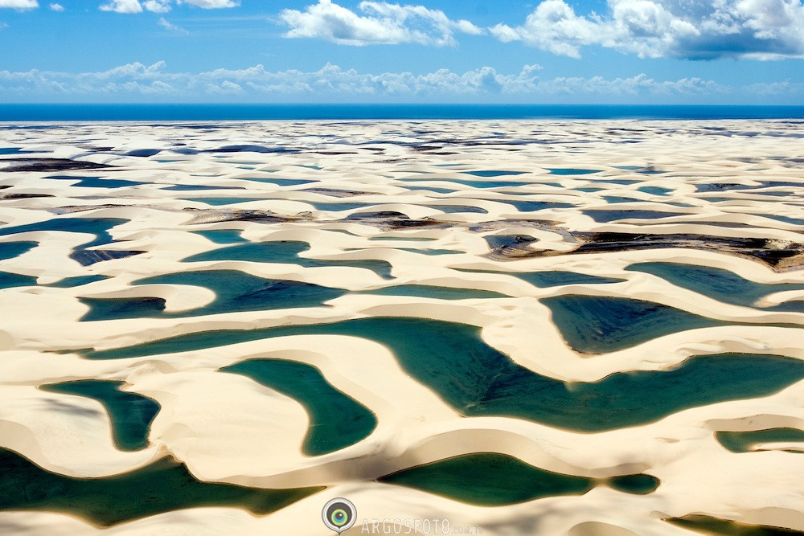
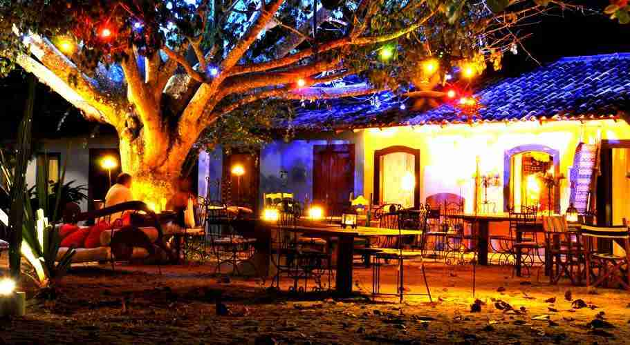
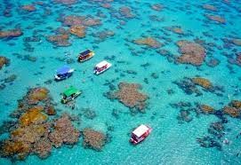

DESCUBRA O PARAÍSO DO NORDESTE
Praias paradisíacas, dunas, falésias e a hospitalidade que só o Nordeste oferece. Conheça os melhores destinos para sua viagem dos sonhos!
VER DESTINOS
Praias paradisíacas, dunas, falésias e a hospitalidade que só o Nordeste oferece. Conheça os melhores destinos para sua viagem dos sonhos!
VER DESTINOSO Nordeste brasileiro é uma das regiões mais visitadas do mundo por suas praias únicas, gastronomia inesquecível e cultura vibrante. Cada estado reserva surpresas que vão de dunas a falésias coloridas.

Dunas, lagoas cristalinas e o famoso pôr do sol na Duna do Pôr do Sol.

Falésias incríveis e chance de ver golfinhos bem de perto.

É conhecido pela sua vasta paisagem desértica de grandes dunas de areia branca e pelas lagoas sazonais de água da chuva
"As praias são simplesmente incríveis! Voltei renovada dessa viagem."
"Foi a melhor experiência da minha vida! Quero voltar em breve."
"Nordeste é um destino completo: cultura, sol e boa comida!"

Com cenários que variam entre falésias majestosas, mar transparente, piscinas naturais, belos coqueirais e longas faixas de areia, Trancoso é um destino perfeito para os amantes de praia.

É conhecida pelas extensas dunas de areia costeiras e pelo Forte dos Reis Magos, em forma de estrela, uma fortaleza portuguesa do século XVI na foz do rio Potengi.
Assista e conheça as belezas dessa região incrível.